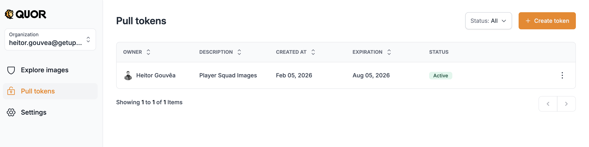
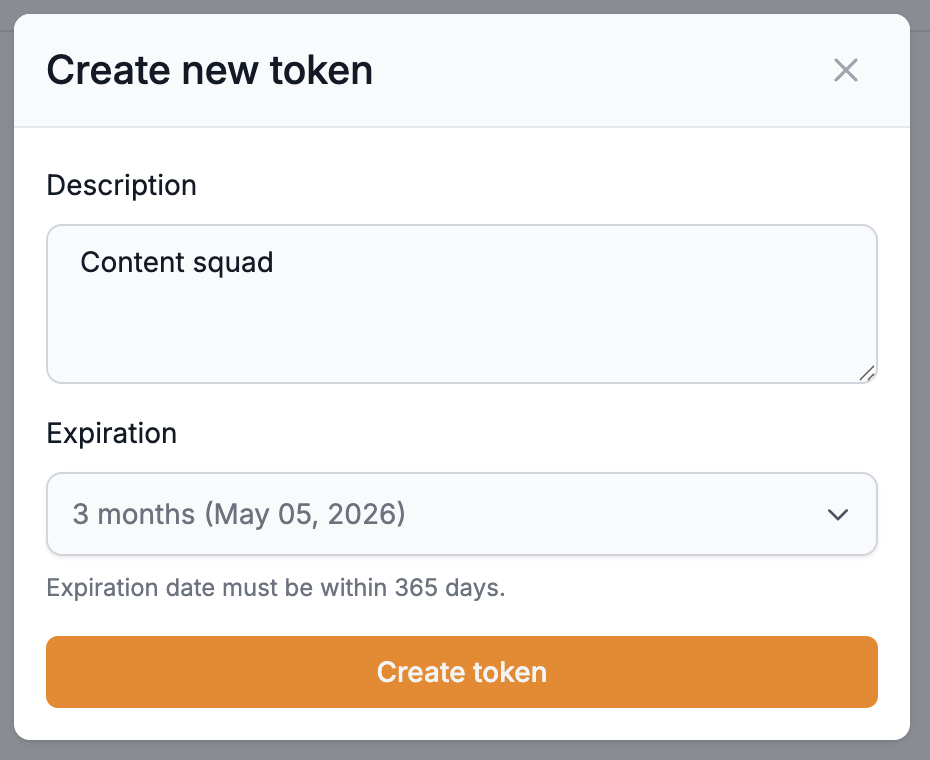
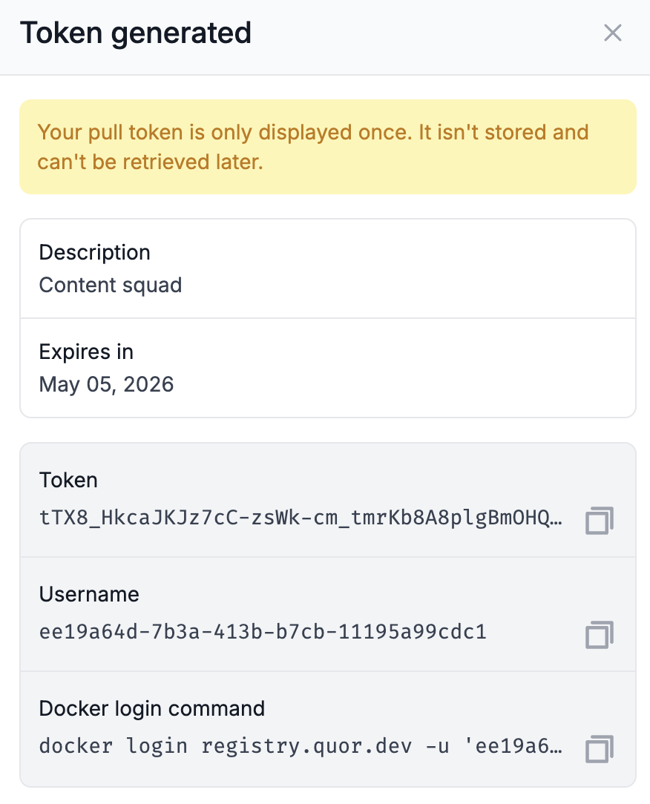

Getting started with Quor¶
Welcome to Quor¶
To get started, access the Quor interface at: app.quor.dev
First access¶
On your first login (using GitHub, Microsoft, or Gmail), Quor automatically:
- Creates your user account.
- Links an organization to your user.
- Activates the Trial plan.
- Creates the administrators group (admin), with all permissions to manage the interface.
After your account is created, you gain access to the Quor interface and can view the Explore Images section.
There you'll find the catalog images available for subscription, including:
- Available image versions;
- Metadata and technical specifications.
Important
To pull or verify an image, you need an active subscription (Trial or Enterprise) for your organization, as well as create a token for authentication.
Tokens¶
The access token is the credential used to authenticate with the Quor registry. It authorizes the pull operation of subscribed images and should therefore be treated as a secret.
Creating a token¶
- While logged into Quor, go to Pull Tokens.
- Click on Create Token.

- Enter a description to identify the token.
- Set an expiration date (must be within 1 year).

- Confirm the creation.
- Once created, the
docker logincommand will be displayed, containing the authentication data for the registry.

Important
- Only users with administrator permissions can generate tokens.
- Token information is displayed only once at creation time; the data cannot be recovered later.
- If the token is lost or exposed, you must revoke it and create a new one.
Registry authentication with docker login¶
To access and download images from Quor, you need to authenticate with the Quor registry, located at: registry.quor.dev
Authenticate with the Quor registry using the command shown in the docker login command field when creating the token. This command keeps your session active until the token expires, without needing to use an inline token.
Example:
docker login registry.quor.dev -u '<USERNAME>' -p '<TOKEN>'
Once authenticated, you can pull any image included in your subscription (Trial or Enterprise).
Getting the image path¶
After subscribing to an image, the corresponding path is displayed in the Quor interface. This path should be copied and used in docker pull commands to download the image.
Example:
docker pull registry.quor.dev/default/<IMAGE>:<TAG>
Note
When the token expires, you'll need to run docker login again with a valid token to continue working.
Quick Start: Caddy image example¶
Here's a practical example of how to use a secure Quor image in your environment.
Requirements¶
To access this image, your organization must have:
- An active Quor plan with available image subscriptions.
- A subscription to the desired image (click "Subscribe to image").
- A valid Pull Token, already configured in your Docker CLI (
docker login).
Usage¶
Start by pulling the caddy image using any available version from the Versions tab:
docker pull registry.quor.dev/default/caddy:2.10-alpine
For production environments, we recommend hosting the image in your organization's own registry or setting up a mirror.
To copy the container image along with its attestations and signatures, use cosign instead of the traditional docker tag + docker push:
cosign copy registry.quor.dev/default/caddy:2.10-alpine <YOUR-REGISTRY>/caddy:2.10-alpine
Deployment examples¶
Below are examples showing how this image can be deployed in Kubernetes or other environments. Replace all placeholders (<...>) with values specific to your environment.
Update a Kubernetes Deployment:
kubectl set image deployment/caddy <CONTAINER-NAME>=<YOUR-REGISTRY>/caddy:2.10-alpine
Upgrade a Helm Release:
helm upgrade <RELEASE-NAME> <CHART> \
--set path.to.repository=<YOUR-REGISTRY>/caddy \
--set path.to.tag=2.10-alpine \
--wait --reuse-values
Base image in a Dockerfile:
FROM <YOUR-REGISTRY>/caddy:2.10-alpine
Next steps¶
For a smooth and secure experience:
- Validate the image in your environment to ensure it meets your operational and security requirements.
- Keep the image updated to benefit from the latest security patches and enhancements.
For any issues, questions, or feedback, contact us.